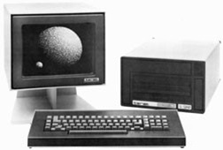
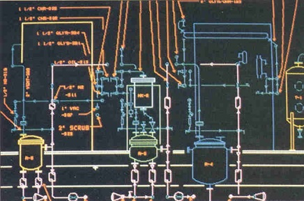

第20章：Tom Lazear与VersaCAD
汤姆·拉泽尔在1957年从加州大学（伯克利）获得机械工程学士学位后加入南加州煤气公司。他的职位是一名副设计工程师，负责设计管道系统、泵站和类似的项目。 然后他于1959年加入Fluor Corporation，担任一名副计算机工程师。在参加了一周的编程课程后，他开始与Fluor的一名资深结构工程师Eli Czerniak一起工作。Czerniak曾在1948年以色列独立战争期间为哈加纳（Haganah）作战，然后移民到美国。 Czerniak认识到数字计算机在解决工程问题方面的潜力，一旦Lazear开始在Fluor工作，Czerniak决定他们将共同开发一系列结构分析和设计程序。
1959年，Fluor正在使用Burroughs Datatron 205计算机。这台机器最初由Consolidated Electrodynamics Corporation（CEC）开发，其ElectroData部门随后被拆分并上市。ElectroData然后被Burroughs收购，成为该公司随后计算机活动的关键组成部分。
Datatron 205是一种真空管计算机，具有4,000个10位数容量的鼓式存储器。主要的输入和输出方式是通过冲压纸带Flexowriter完成，该设备还兼作控制台打印机。Datatron 205是当时相当先进的机器，具有索引寄存器、浮点运算和磁带数据存储。它体积相当大，几乎占据了20×30英尺的空间，需要20吨的空调设备。在许多方面，Datatron 205与IBM的650相当，尽管Datatron机器在物理上要大得多，成本也要高得多。
Lazear 和 Czerniak 创造的程序促进了竖直和水平压力容器加固混凝土基础的设计，以及压力容器本身的设计。基础程序通过设计工程师提供的相当直接的输入数据计算基础的大小以及所需的加固钢筋。其中一个输出形式是在小的韦伦纸张上打印出具体的尺寸数据，然后将其贴到全尺寸的绘图纸上。这些程序在《石油/化学工程师》[1]和《咨询工程师》[2]等出版物中得到了记录。
Lazear参与的第一个自动绘图应用涉及在Stromberg Carlson SC4020电影记录仪上制作等轴管道图。这个过程包括编写指示管道如何转移的指令，将信息录入卡片，并在大型计算机上处理这些卡片。计算机生成的磁带指令然后被SC4020使用，生成电影图片。该电影通过Xerox Copyflow机器复制到韦伦纸张上。弗罗尔公司在开发该过程方面投入了大约一年的时间。根据Lazear的说法，这个过程“相当笨拙，从未成为生产系统。”[3]直到十年后，当弗罗尔公司获得了它的第一个M&S Computing (Intergraph)系统时，计算机生成的等轴图才变得实用。
在为南加州煤气公司和弗罗尔工作时，Lazear获得了UCLA的电气工程硕士学位。随着计算机的应用越来越普遍，Lazear负责了大部分的活动。1968年，他成为该公司的计算机服务主管，这个职位今天可能被称为CIO。在回到学校并获得了麻省理工斯隆管理学院的硕士学位后，Lazear成为Fluor南加州分部的高级副总裁和总经理的助手。他在这个职位上服务，直到1979年离开该公司，全职加入T&W系统。
T&W Systems 早期的日子
T&W Systems是Lazear和William Yunek在1977年兼职创办的。Lazear说他曾经笑着告诉别人T&W代表Tom和妻子的名字，但有一位女权主义者提出反对，所以他停止了这样做。T&W最初的员工包括Tom Lazear、他的妻子Sandy、他的女儿Debbie（在加州大学尔湾分校读书）和他的儿子Mike（在加州州立大学长滩分校读书）。
T&W Systems开发的第一个软件是一款医疗账单应用程序。Sandy Lazear曾在一家整形外科诊所工作，William Yunek是该诊所的办公室经理。这家诊所的医生们出资30,000美元帮助T&W Systems起步。
Lazear在开始开发医疗账单系统之前进行了广泛的计算机系统审查，并最终选择了CADO计算机来开发这个应用程序。它拥有8英寸软盘驱动器、一个大显示器和一个简单的操作系统，使用COBOL和Basic的组合。Lazear夫妇在1977年的一个星期六上了一个编程课程，并于下周一开始开发账单应用程序。他们投入了大约1,000个人小时的时间开发软件，并将第一份副本售价5,000美元。还售出了一些额外的系统，但产品并不成功，不能以此为依据来制定公司的未来计划。
随后，焦点转移至管道设计软件的开发，并最终发展出了计算机辅助设计软件。Lazear 意识到需要更强大的计算机来运行这些应用程序，于 1976 年实际上购买了一台带有 RSX-11 操作系统和 FORTRAN 编译器的 Digital PDP-11。它一直闲置在家里的盒子里，他们在寻找一个办公室来容纳 T&W Systems。
在 1978 年的某个时候，Lazear 遇见了 Terak 的当地销售代表 Dick Mitchell，他说服他 Terak 是 T&W 使用的正确计算机系统。该公司为这台计算机开发的第一个软件是一个他们称之为 T-Square 的管道等距制图软件包。该软件在 1970 年代末销售给了大约半打公司。不幸的是，管道等距制图软件主要吸引了大型设计公司，这些公司更倾向于从主要 CAD 玩家（如 Intergraph 和 Calma）购买关键应用程序。
大约在同一时间，该公司开始开发其第一个通用 CAD 制图产品，也称为 T-Square（有时称为电子 T-Square）。它最初在 1979 年末向用户发货，并于 1980 年在 Tucson 的 Arizona 大学用于一门名为“计算机辅助设计入门”的课程中开始生产模式。从那以后，该软件及其派生产品一直被视为教育工具。
Terak 是位于亚利桑那州斯科茨代尔的一家小型计算机公司，由 Bill Mayberry、Dennis Kodimer 和 Brian Benzar 创立。其主要产品是 T-Square 使用的机型 Terak Model 8510/a。它基于 Digital Equipment Corporation LSI-11/03 16 位处理器。Digital PDP-11 是一台相当实用的机器，Digital 公司有几个不同版本的市场。LSI11/03 主要是 OEM 产品。
Terak 8510/a可以支持高达128KB的主存储器，如果用LSI-11/23替换11/03。还配备了容量高达40MB的硬盘。基本的8510/a售价为8935美元，带单色320×240分辨率显示器。该机器还有彩色版，售价为10550美元，带有8种颜色的640×480分辨率。

Terak计算机采用了由加州大学圣迭戈分校的Kenneth Bowles博士开发的UCSD Pascal或USCD-P操作系统。该操作系统也可在惠普HP9836和HP200系列工作站、苹果II和IBM PC上选择使用。使用Pascal编写的程序编译成”p code”（p代表伪代码而非Pascal代码），以紧凑的ASCII格式存储。该p code使用在UCSD-P操作系统环境中运行的解释器执行。根据Lazear的说法，结果是可快速执行的代码，可根据需要在主内存中轻松叠加新模块。
1979年，Lazear离开Fluor公司并全职加入T&W Systems。UCSD-P编程环境对程序员来说有些难以理解。Lazear决定将整个编程团队派往盐湖城，在那里他们与犹他大学的教授Dick Brant会面两天。Brant是使用UCSD-P的专家，并为Terak系统编写了许多程序。他教T&W程序员如何在Terak上开发图形应用程序以及如何为该机器构建大型程序。根据Lazear的说法，“那次小旅行带来了巨大的回报。”
T-Square系统包括一台带有64KB内存、两个软盘驱动器、一台11英寸的Houston Instruments HIPAD平板、一台11英寸×17英寸的Houston Instruments HIPLOT DMP-7绘图仪和基本绘图软件的Terak 8510/a价格为23,500美元。这是在大多数基于小型计算机的系统每个座位售价高达125,000美元的时代。T-Square软件针对于流程图和仪表图（P&IDs）等原理图绘制应用。T&W Systems首次作为展商参加的贸易展览是1981年秋季的COMDEX，公司在Terak展台上展出了T-Square。接下来是1982年春季在芝加哥举行的A/E/C SYSTEMS展览会。
T-Square被移植到了苹果II上
T&W公司重新设计了T-Square程序，于1982年5月发布了CADapple版本，支持苹果II电脑。当时，苹果电脑公司备受瞩目，选择支持苹果II电脑而不是IBM PC是一个合理的决定。但历史最终证明这是一个错误的选择。一套CADapple系统包括一个拥有48KB内存的苹果II电脑，两个软盘驱动器，一个操纵杆用于光标控制，一个Houston Instruments DMP-7绘图仪和软件，售价为$9,995。一个笔记本需要额外花费$1,000，而仅软件本身售价$2,475。到1983年，CADapple成为苹果II上最畅销的CAD软件，主要竞争对手是Cascade Graphics。七年后，CADapple的价格仅为$395。
T-Square软件最初主要由Mike Lazear编写。在大学期间，他曾为Terak软件编写过一些绘图生成和外设驱动程序。Mike Lazear的同学Chris Stammen被招募加入了T&W的苹果实现团队。Lazear将Stammen描述为“我见过的最强大和优秀的程序员之一”。Debbie Lazear的男友Paul Barr当时也兼职加入了这个团队，还有几位高中生，Brian Martin、Richard Endo和Ken van Hyning。他们都是聪明的年轻程序员，在为T&W工作期间取得了不少成就。Martin获得了来自UCI的机械工程博士学位，目前正在从事国防和航空航天项目，如“掠食者”无人机。
为苹果II编写T&W软件的工程复杂度在于Chris Stammen所使用的电脑只有两个软盘驱动器，没有硬盘驱动器。CADapple的源代码充满了20个软盘。每次编译程序时，必须按顺序逐个软盘输入电脑。如果出现问题，整个过程必须重新开始。按照Lazear所说，“我们终于有能力购买5 MB的硬盘驱动器时，他是这个星球上最快乐的人。”
汤姆·拉齐尔将 CADapple 和最终的 VersaCAD 软件质量的很大一部分归功于迈克·拉齐尔。迈克创建了公司遵循的文档编制方法以及软件代码本身的组织。根据汤姆·拉齐尔的说法：“他引进了新人，训练他们按我们的方式做事，分配工作，并将代码提升到了超过 1,000,000 行。最初的代码是用 Pascal 写的，后来换成了 C…”。
VersaCAD 时代的开始
1982 年 11 月，Autodesk 在 COMDEX 展示了 AutoCAD。虽然没有找到早期的比较，但那时 CADapple 的功能似乎比 AutoCAD 更强大。T&W Systems 很快推出了其软件的 PC 版本。1983 年 1 月，该公司推出了定价为 1,995 美元的 T-Square 软件，重命名为 VersaCAD，用于 PC。它使用 UCSD-P 操作系统，基本上是在 Terak 系统上运行的相同的 Pascal 代码。该公司还为其他系统供应商提供了其品牌的软件，包括通过 Carrier 公司推出的 E2000 用于惠普 9863、通过 Staedtler Mars 推出的 Terak MarsCAD 和通过 AT&T 的 OmniCAD 部门推出的 OmniDRAFT。Staedtler Mars 还在 HP9836 计算机上重新销售了 MarsCAD。所有这些系统都使用 UCSD-P 操作系统。
在 1983 年 NCGA 会议上发表的一篇论文中，拉齐尔描述了一个基于 Apple 的典型 CAD 系统，由带有 64KB 主存储器和第三方浮点卡的 Apple II 计算机组成。这些系统不仅配备了图形显示器、两个软盘驱动器、绘图仪和数码仪，还附带了诸如 CADapple 之类的综合软件包。这些系统在 1983 年的价格大约为 10,000 美元。在这个价格下，硬盘是不包括在内的。拉齐尔认为这样的系统可用于更大型的 CAD 系统的前处理器，或者在预期的生产率提高不足以证明使用高端系统的情况下使用。
他的1983年论文所述的余额继续描述了低成本系统所需的功能。Lazear指出的一个重要特点是，用户应始终在副本上工作，而不是在原件上工作。只有在工作副本保存时才会更新原件。这听起来像是今天的标准方法，但那个时代许多系统让用户在保存的图纸副本上工作。
VersaCAD的早期实现需要一台IBM兼容PC，配备128KB的主存储器，两个软盘驱动器，一个单色监视器，一个彩色监视器，两个RS-232串行端口，一个数字化板和一个笔绘图仪。单色监视器用于程序消息和菜单，而彩色监视器用于图形显示。由于VersaCAD绘图以浮点格式存储，因此数学协处理器高度可取。
1984年7月24日的PC杂志上概述了四个PC CAD软件包：AutoCAD，VersaCAD，Drawing Processor（BG Graphic Systems）和CADplan（Personal CAD Systems）。作者Allen Meilach明显认为AutoCAD和VersaCAD是市场领导者。AutoCAD在更多的PC平台上得到支持，利用了更广泛的外围设备。特别是，AutoCAD支持使用鼠标进行光标控制以及平板电脑，而VersaCAD需要平板电脑。AutoCAD在用户自定义菜单、创建用户定义的交叉图案和嵌套图形对象方面也更好。
另一方面，VersaCAD比AutoCAD快得多，因为只需要在重新生成监视器上的图像时扫描活动层。 VersaCAD拥有的其他优势包括在放置符号之前动态跟踪符号的大小，位置和方向的能力，放置和编辑倒角的能力，使用Bezier曲线以及使用工作文件概念进行数据恢复。
虽然硬盘不是必需的，但Meilach建议购买一个，因为这种数据恢复技术需要频繁的磁盘访问。他还指出，尽管VersaCAD比AutoCAD更贵，但它包含了许多后者程序中可选的功能。此外，VersaCAD的购买者在第一年可以获得免费升级，而AutoCAD用户必须为升级付费。关于VersaCAD，Meilach评论说：“该程序积极更新，应该成为微型CAD市场的领先竞争者。”到1984年底，T＆W Systems的年收入略微超过200万美元。
VersaCAD被移植到MS-DOS
到1983年，微软的MS-DOS显然成为了个人电脑操作系统的首选。一个MS-DOS版本的VersaCAD在1984年推出，或者按照Lazear的说法晚了两年。在接下来的六年中，T＆W Systems发布了一系列持续的VersaCAD增强功能。一个具有线框和隐藏线的三维曲面几何模块售价495美元，于1985年4月发布。根据CAD / CIM Alert的说法，“顺便说一句，现在T＆W的VersaCAD已经有了IBM PC版本，它可能会排挤AutoCAD在PC CAD市场上的地位。”[16]由于VersaCAD自1983年8月起在PC上就可用了，我认为这封通讯可能指的是VersaCAD的MS-DOS版本。
1985年10月，该公司推出了Sun 2工作站的UNIX版本VersaCAD，采用了许多当时软件包的价格溢价，与PC上的1995美元相比，UNIX版本的价格为4000美元。大约在同一时间，该软件包的日语语言版本也可用。这可能是第一个PC CAD软件包的日语语言版本。该公司还开始看到大型企业购买其软件，利用其公司站点许可协议。例如，GE Aircraft Engine曾经一度拥有超过3,000个活动座位的VersaCAD。[17]其他大型用户包括拥有1,000个座位的国防承包商AAI，拥有1,000个座位的AT＆T以及拥有300个座位的加利福尼亚州交通部。[18]
1985年12月，T＆W系统推出了VersaDATA，这是一个针对PC版本的VersaCAD的关系数据库管理系统，售价为3,000美元。然后在1986年3月，引入了Caetec Technology位于佐治亚州亚特兰大的许可的实体建模软件包VersaMODEL，价格从8,200美元开始。不久之后，公司将UNIX产品线扩展到阿波罗和IBM工作站。 T＆W系统在1986年4月开始销售售价为495美元的EasyCAD。EasyCAD由Mike Riddle开发，他是AutoCAD的初始版本的开发人员。EasyCAD能够与AutoCAD和VersaCAD共享文件。
1986年3月11日，《PC Magazine》发表了一篇关于PC CAD的广泛文章，这是自之前提到的1984年文章以来的第一篇。这次是由Glenn Hart撰写的，涵盖了11个不同的软件包。总的来说，Hart对于VersaCAD Advanced（当时的2D版本的名字）的评论相当积极。他喜欢先前需要在PC中占用扩展插槽的插件卡所需的硬件保护已被名为SuperLok的软件技术所取代。该软件现在支持使用鼠标进行光标控制，并且只需要一个监视器。菜单显示在屏幕左侧，而消息和坐标值则显示在底部。
Hart喜欢的其他VersaCAD功能包括：
- 使用单字母命令进行常用操作。
- 创建临时指南的能力。
- 使用符号轮廓，内部细节被压制以加快显示操作的速度。
- 通过输入符号编号和库标识从个人库中选择符号的能力。
- 能够计算不规则区域的面积和周长，以及计算横截面属性，包括力矩、重心等。
- 可选的立体造型模块被认为比Autodesk目前提供的任何东西都更优秀，但功能低于CADKEY。
- 可选的材料清单模块VLIST被认为特别有效。
另一方面，Hart认为VersaCAD需要改进的几个方面包括：
- 用户界面虽然“完全可用”，但不如竞争对手中最好的。
- 设定尺寸被认为是有限的-例如，如果一个尺寸不适合，用户必须重新调整尺寸文本。
- 图纸只能包含100种不同的符号。
- 十字线填充仍然相当有限，没有预定义的模式和用户定义模式的能力。

T&W和VersaCAD开始成熟
1986年，T&W Systems将其名称更改为Versacad Corporation（注意公司名称和产品名称的不同拼写）。截至1986年7月31日结束的财政年度，其收入为550万美元。根据Daratech Associates的数据，截至1986年底，公司拥有30,000个用户，其中包括6,000个CADapple工作站和1,000个EasyCAD工作站。到1987年初，该公司的产品线包括以下软件包：[22]
- VersaCAD Designer 包括VersaCAD 2-D和VersaCAD 3-D - 2,995美元（现在2-D和3-D模块具有一致的用户界面）
- VersaCAD 2-D - $2,495（早期称为VersaCAD Advanced）
- VersaCAD 3-D - $995（该软件包需要VersaCAD 2-D，但是可以分开定价，使用户可以从2-D转到3-D）
- 专家符号库 - $495每个（可用于机械工程、管件、供暖、通风和空调、工业控制、液压原理图、建筑、地图以及电气和电子原理图）
- VersaData -$495
- VersaMODEL – $8,000及以上
- EasyCAD – $495
- CADAPPLE – $1,495
- CADAPPLE入门版 - 99美元（CADapple的功能有限版本，仅供教育用途）
到那个时候，Versacad在全球拥有200多家分销商，包括Tandy / Radio Shack、MicroAge和SPI SoftPac International等公司。该公司是CAD行业中销售企业站点许可证的少数公司之一，这是1999年它将重新启用的营销战略。Versacad软件在教育机构中得到广泛应用。当时，该公司声称每年有超过50,000名绘图员在1,300家教育机构接受培训。
VersaCAD 2-D特别适用于绘制建筑平面图。该软件处理多线墙壁，并具有自动角落清理功能，以及将窗户和门嵌入这些墙壁的能力。大多数其他CAD软件需要单独定价的建筑附加组件来处理这些功能。该软件还使用户能够自动将二维图纸转换为三维等轴测图。VersaCAD 3-D是一个面向曲面设计的软件包，处理广泛的几何原型，并生成具有隐藏线条的带阴影或线框图像。
在1987年初发布的VersaCAD Release 5.2中，该软件支持了质量属性和自动正交视图。该公司还推出了VersaCAD / Mechanical，其中包含了一些机械绘图增强功能，包括几何公差，售价为495美元。在当月的新闻发布会上，该公司声称在过去的五个月中已经出货了10,000份VersaCAD 3-D的副本。
1987年8月，VersaCAD推出了Macintosh版。根据Versacad的说法，Macintosh上的VersaCAD性能约为IBM PC/AT的2至2.5倍，与新的80386 PC相当。该公司在这个业务领域面临的主要问题是，苹果从未积极地将其计算机推向工程界。因此，即使具有吸引工程师的易用性特征，Macintosh设计软件在建筑领域之外没有太多需求。到1987年中期，Versacad已经发展到67名员工，年收入约为800万美元。
Prime收购了Versacad，以及VersaCAD产品线
1987年10月，Prime Computer以不到600万美元的价格收购了Versacad，其中包括200万美元的前期款和基于VersaCAD产品线的后续业绩支付。目的是继续将Versacad作为现有管理下的独立业务实体运营。当时，Prime没有其他PC CAD业务活动。其主要CAD业务集中在在公司的大型小型计算机上运行的Medusa上。同样在1987年，VersaCAD 5.3发布，具有多个3D视口。1988年2月，Prime收购了Computervision，将该公司的Personal Designer PC CAD软件添加到企业产品组合中。Lazear回忆起这一发展对Versacad员工非常困扰。
“……我们不再是Prime唯一的PC CAD部门，这对做着800万美元通用业务的我们来说很糟糕。而CV Personal CAD正在针对机械设计软件，并取得了约4000万美元的年收入”。
25百万美元。此外，他们就在贝德福德，马萨诸塞州，而我们却在加利福尼亚州远离他们。我们从受宠爱的儿子变成了“加利福尼亚州的其他PC CAD”。[23] 然后在1989年1月，Prime完成了对Calma的收购。Lazear花了将近六个月的时间协助公司总部安排这笔交易。Bob Fischer负责Prime现在称为其Computervision部门的贝德福德分部，而Lazear是集团副总裁，向Fischer报告，负责Versacad，CV的Personal Designer和Calma产品。总的来说，Lazear负责约1亿美元的收入和500名员工。Lazear在Dataquest的一项研究中被引用，预测PC操作系统将从MS / DOS和OS / 2转向UNIX。第一个预计将从80％减少到40％，而UNIX在PC上的使用率将从0.7％增加到30％，Macintosh将从18％增加到30％。Lazear还预测，关系型数据库管理系统的使用量将增加，以支持CAD应用程序，并将增加对IGES的使用。“人工智能是黄金所在。”[24] 他在数据库管理系统方面的观察是相当准确的，但他严重低估了Microsoft最终在PC市场上的主导地位。
到1989年初，已有75,000份VersaCAD副本在使用中。Macintosh版的价格为1,995美元，而VersaCAD Design for PC和其他平台的售价为2,995美元。一些人认为这款软件比AutoCAD更易于使用，但公司的营销努力却不及Autodesk。25在接下来的一年中，仅售出了5,000份额外的副本。26实际上，即使在1994年，这80,000个用户数量仍在使用，尽管Lazear认为其峰值约为100,000。[25] 在这段时间里，关于VersaCAD的重大产品发展很少。
Lazear离开Prime Computer并成立Archway Systems
Tom Lazear于1989年晚期离开了Prime Computer，创建了Archway Systems，最初为了提供Lazear为Prime的Computervision部门提供咨询服务的途径。 Mike Lazear一年后离开了Computervision，Archway成为了CAD系统的经销商，最初为Computervision的产品，包括VersaCAD，后来为Bentley Systems。今天，Bentley产品占据Archway业务的最大部分，其次是VersaCAD，具体如下。
1991年3月，Prime关闭了位于加利福尼亚州亨廷顿海滩的VersaCAD设施，并将其PC CAD业务合并到MA州的Bedford。此时，Computervision正在销售三个PC版本的VersaCAD：VersaCAD/386旨在在80386或更高版本的PC上运行（$3,495），VersaCAD Design适用于早期的80386机器（最初为$2,995但后来降至$1,995），以及支持有限2D绘图的VersaCAD Drafter（$595）。该公司还继续销售Macintosh版的VersaCAD（售价$2,995）以及适用于Sun Microsystems系统的UNIX版。
1993年2月23日发布的PC Magazine杂志上有一篇关于2D绘图解决方案的重要文章，这是我知道的最后一篇详细描述VersaCAD Version 7的文章。此次审核由Rod Taylor完成。自1986年早期的PC Magazine审查以来，软件似乎没有进行过任何重大更改，尽管软件现在包含了Computervision的专有CAD编程语言CPL，并支持ANSI标准Y14.5M-1982的标注和公差。 CPL最初是由Paul Barr在mid-1980s在Versacad开发的。它提供了一个例程库，使用户能够访问VersaCAD绘图文件。例如，一位客户Gary Miller就用它创建了一个程序，自动化了钢筋混凝土停车场的设计。
该软件包现在包括一个称为QuickRender的隐藏线去除和阴影模块。与大多数其他PC系统一样，VersaCAD使用户可以将宏命令分配给笔记本电脑菜单。被许可来自Image Systems Technology的VersaCAD Overlay使VersaCAD能够读取光栅图像并将其用作背景图像。 Taylor特别喜欢在网络化的环境中，当前正在使用的文件无法被另一个用户修改的事实。
泰勒对VersaCAD最大的抱怨是软件处理内存的方式。安装软件时，用户需要定义最大的工作文件大小，这将决定图纸中实体的最大数量。有些绘图任务（如交叉图案）会生成大量实体，并很容易超出预定义的限制。在内存有限的机器上选择过高的值可能会限制软件执行其他操作的能力。在将PC CAD操作迁回Bedford之后，没有太多关注放在了VersaCAD产品线上。例如，在1993年9月的Computervision年度用户会议上，有十篇涉及Personal Designer的论文，但没有用户或公司人员发表有关VersaCAD的论文。到1997年，Computervision甚至都不觉得需要向CAD评级指南提供有关VersaCAD的数据。
1992年，Prime Computer的CAD软件部分重新获得了Computervision的名称，并再次成为一家上市公司，就像第12章所描述的那样。Computervision在整个1990年代都在努力恢复其曾经的势头，但并没有取得太大的成功。最终，在1998年1月，Parametric Technology Corporation收购了Computervision，而后者显然对VersaCAD产品线不感兴趣。PTC主要收购Computervision是为了获得该公司在国防、航空航天、汽车和工业设备等领域的大客户。除了忠实用户之外，VersaCAD继续承受着被人们遗忘的命运。
Emerald Forest变成Pelorus
Prime收购Versacad的一个不太为人所知的方面是，Versacad的一个先进开发项目“Emerald Forest”与几年后由Computervision推出的一个后续技术倡议“Pelorus”之间的联系。Emerald Forest始于1986年，旨在应用两种最新的软件开发概念，即面向对象的软件技术和OS-2与Presentation Manager用户界面的组合。这是一个规模相当大的项目，由Chris Stammen领导。到1987年中期，Stammen和他的开发团队已经拥有了一个原型。
1987年10月，Lazear和Stammen参加了由Microsoft和IBM在纽约古根海姆博物馆主持的一次重要技术发布会，发布了这两家公司针对OS-2和Presentation Manager V2.0的计划。Versacad是12家受邀展示使用这些产品的软件开发商之一。当时，微软和IBM共同参与OS-2的开发和推广，尽管这种合作关系往往是脆弱的。
Lazear记得，比尔·盖茨和史蒂夫·鲍尔默来到了受邀开发人员展示其新OS-2软件的展台。当他们来到Versacad的展台时，鲍尔默向盖茨介绍了Lazear和Stammen，说：“我一直想问，你们CAD人员为什么使用浮点算术？” Lazear说，他以设计类似金门大桥这样的大型结构进行复杂三角函数计算的例子作为回答。他说他非常清楚那个日期，因为那天是1987年股市崩盘的星期一。
1987年末，Prime收购了VersaCAD，Emerald Forest的开发继续在公司位于加利福尼亚州亨廷顿海滩的办事处进行，但没有明确基于该技术的产品作为VersaCAD产品线的一部分推出。最终，Emerald Forest的开发被移至Prime在加利福尼亚州圣地亚哥的Calma设施。Computervision后来将此软件更名为Pelorus，并将其作为新一代CAD开发环境进行营销。Computervision试图向其他软件公司许可技术，以及将其作为公司自身应用的基础。Computervision推出的一个包叫做DesignPost。它意图成为VersaCAD的继任者，但在市场上没有取得多大影响，最终从视野中消失了。
Archway重新获得VersaCAD的版权
同时，Archway Systems已经成为建筑工程和机械设计软件产品的受人尊敬的经销商。特别是，Archway在南加利福尼亚州是Bentley Systems’ MicroStation软件的重要经销商。1999年中期，PTC通知VersaCAD用户，从一个预定未来日期开始，PTC将停止销售更多VersaCAD副本，只提供短期支持。Lazear看到了关于VersaCAD的商机，并联系了他从Prime/Computervision时代认识的一些人。他们让他联系了PTC的首席执行官Steve Walske，在三个月的法律纠纷之后，他们达成了一项协议。自1999年10月起，Archway完全负责支持VersaCAD及其安装基础。显然，这样做的唯一成本是Archway要提供一个VersaCAD到Pro/ENGINEER的文件转换器。Archway面临的第一个问题是联系现有的VersaCAD用户。唯一可用的邮件列表已经过去了九年。然而，对该列表的邮件却找到了200个用户，使用了超过1,500个许可证。
从重新获得VersaCAD以来，Archway已将新许可证的价格降至$795，无限企业许可证定价为$5,495，并将软件移植到Windows平台，签约众多维护和支持计划用户，推出了Macintosh版本的新发布，并继续增强了整个软件包。包括Mike Lazear和Paul Barr在内的一些原始开发人员再次参与到支持VersaCAD的工作中，还有Mike的儿子Josh Lazear。三代人都在帮忙，没有比这更好的了。
Lazear认为仍然有20,000个VersaCAD用户，并打算为他们提供他认为大家应该得到的支持。总共有600个组织签署了Archway的软件支持计划，估计使用了6,000个VersaCAD座位。该公司继续向学校、现有用户、移动到新公司的用户、寻找低成本CAD和Macintosh用户销售新的VersaCAD许可证。
VersaCAD在Macintosh平台的版本是一个有趣的情况。尽管VersaCAD是Macintosh平台上仅有的几个通用CAD软件之一，但PC版本的销售额比Macintosh版本高出十倍。从根本上说，苹果公司继续在技术用户市场上做得不好。对于Archway来说，复杂化的Macintosh市场情况是，这个平台的新操作系统选择是OS X。将VersaCAD转换为基于UNIX的OS X是一个重大的尝试，Archway在2006年完成了这个转换。
为什么Autodesk会赢得这场战争
围绕VersaCAD的主要问题是，为什么Autodesk的AutoCAD软件包在后者于1982年底推出几年后就开始大幅超过它的销售额。在竞争的早期，VersaCAD率先进入市场，易于使用，并具有更大的功能。Autodesk的成功似乎有几个原因。
- 一旦迈克·福特加入Autodesk，它就比Versacad更加注重营销，并花费了更多的资本在营销上。Lazear提供的一个例子涉及一个早期的A / E / C SYSTEMS会议在加利福尼亚州安那罕的展示。福特事先向许多演讲者发送了免费机票，邀请他们到加利福尼亚州索萨利托的Autodesk参观。结果，“每个演讲者都谈论了他们在Autodesk看到的内容”。[30]
- Autodesk建立了一个更大、更快的经销商渠道，比Versacad更快。
- Autodesk更加积极地支持第三方开发者和用户组。
- 几位行业分析师认为，VersaCAD使用硬件保护软件，而Autodesk除了短暂的一段时间之外没有这样做，这是Autodesk相对成功的重要因素。Lazear认为，公司自己的市场研究证实了这种看法。然而，当T＆W Systems在1985年放弃所有硬件保护时，该公司并没有看到销售情况的重大改善。我的结论是，硬件保护可能是Autodesk相对成功的一个因素，但并不是决定性因素。
- Autodesk从开始就支持MS-DOS，而VersaCAD需要一些时间从UCSD-P移植到MS-DOS。T＆W Systems选择UCSD-P而不是MS-DOS，因为它认为前者的操作系统技术更加先进。当前的读者可能不知道在PC的早期有多达十种不同的操作系统可供选择。Lazear并不喜欢MS-DOS的早期版本。“我记得在1980年评估它时，说它是垃圾，非常低效和笨拙。它没有UCSD-P拥有的所有功能或支持。”
- Autodesk向教育机构赠送了大量许可证，而T＆W系统继续向这个市场销售软件。根据Lazear的说法，“我们不愿意放弃迫切需要的收入。” [34]
- 在基本AutoCAD售价为1,000美元的同时，VersaCAD的售价为1,995美元，然后涨到2,995美元。
[1] Petro/Chem Engineer February 1962
[2] Consulting Engineer August 1961 and March 1963
[3] Computer Graphics, February 2001
[4] Email from Tom Lazear, March 7, 2003
[5] Email from Tom Lazear, March 15, 2003
[6] Email from Tom Lazear, March 7, 2003
[7] http://www.threedee.com/jcm/terak/
[8] Email from Tom Lazear, March 7, 2003
[9] Anderson Report April 1982
[10] Email from Tom Lazear, March 7, 2003
[11] Email from Tom Lazear, March 20, 2003
[12] Email from Tom Lazear, March 7, 2003
[13] NCGA Proceedings 1983 pg 492
[14] Meilach, Allen, “Getting the Picture”, PC Magazine, July 24, 1984
[15] Computer Graphics, February 2001
[16] CAD/CIM Alert, April 1985
[17] Anderson Report, October 1985
[18] Email from Tom Lazear, March 20, 2003
[19] CAD/CIM Alert, April 1986
[20] “Complex CAD Software for the PC” by Glenn Hart PC Magazine, March 11, 1986
[21] “Complex CAD Software for the PC” by Glenn Hart PC Magazine, March 11, 1986
[22] CAD/CAM CAE Survey, Review and Buyers’ Guide, Daratech Associates, 1987
[23] Email from Tom Lazear, March 7, 2003
[24] CAD/CIM Alert, October 1988 25 CAD Rating Guide – First Edition, 1989 26 Anderson Report, February 1990.
[25] CAD Rating Guide- Fourth Edition, 1994
[26] Email from Tom Lazear, March 20, 2003
[27] “2-D Drafting: Why Pay More” PC Magazine, February 23, 1993
[28] Fifteenth Annual Computervision User Conference Proceedings, September 1993 31 CAD Rating Guide- Fifth Edition, 1997
[29] Email from Tom Lazear, March 20, 2003
[30] Email from Tom Lazear, March 7, 2003
[31] Personal conversation with Dr. Joel Orr, February 28, 2003
[32] Email from Tom Lazear, March 7, 2003
[33] Ibid
[34] Ibid